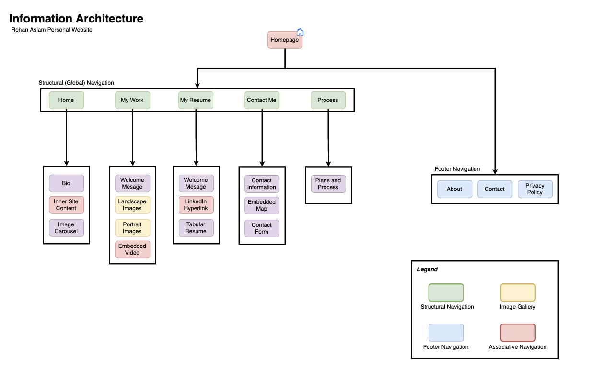

Thinking Process
The thinking process regarding my website involved deciding on its layout, colour scheme, and content, as well as choosing or creating the graphics and images to be used on the site. Below I have provided insight into my thinking for each part:
- Layout: The layout of my website has to do with the way content is displayed on the page. A good layout helps visitors access the most important parts of the website in the easiest ways. Therefore I included global navigation on each page, focusing on the principle of front doors. Layout elements on my website consisted of headers and footers.
- Colour scheme: The colour scheme of a website is the colours used throughout the website. I realized that different colours could influence different emotions, so it was important to have an appropriate yet visually appealing colour scheme that complements the website. I went for a more vintage and calm look for my website with beige and teal colours.
- Content: The content of a website is the information on a website that a visitor can read and has access to. This can include text, images, and videos. For my website, the content present is spotlight images on each page with a welcoming message. Image gallery on work page showcasing my abilities. Also, text and headings provide a description for each page or section. I tried to keep the content well-written and organized to make it easy for visitors to understand.
- Graphics and images: Graphics and images are a huge part of my website. They are used in a connotative manner to draw user attention. I applied in course concepts such as dutch angle, as well as software such as photoshop to create and edit the images present on my site.
I took design inspiration from websites as well. I wanted a simplistic look to my website due to the concept of minimizing information access costs. Personal websites such as Natsai Audrey's were great help in guiding my design process. I presented links and other clickable components with hover features to apply the concept of redundancy gain.
Design Process
Within the design process I focused on creating a Information Architecture and wireframes, which are detailed plans for the structure and layout of my website. This step helped me you organize and plan out the navigation and flow of my website.
My information Architecture (IA) creates a clear hierarchy of information, with the most important information appearing at the top levels and more specific or detailed information appearing lower down, effectively applying the concept of top-down processing. In addition, my IA details my global navigation system that users use to move between different pages and sections of my website. Lastly, precise and descriptive headings, titles, and labels help users understand the content on the site. Below is my IA:

Furthermore, I also developed a wireframe as it is an integral part of
the website design process because it allowed me to represent and
develop ideas regarding a website's structure and layout visually.
It also helped me plan and organize the content to ensure all
necessary elements were included. Below is my wireframe created based
on the homepage of my website. The design of pages on the rest of the
website stems from this primary wireframe.
Acessibility
WCAG 2.0 are a set of guidelines that ensure web accessibility. The following are some measures I took to ensure that my website complies with these guidelines:
- Provided text alternatives for non-text content, such as images with descriptions or alt text within HTML. By doing this, users with impairments can still perceive content.
- Used precise and descriptive language in the website content while providing clear headings and labels for links and buttons.
- Made display legible by keeping contrast between background and text passed standards. The different combinations can be checked here, here and here.